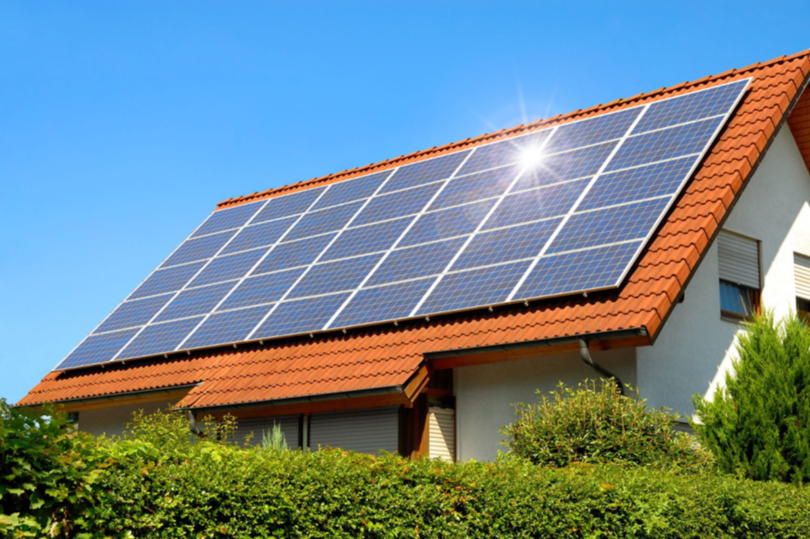
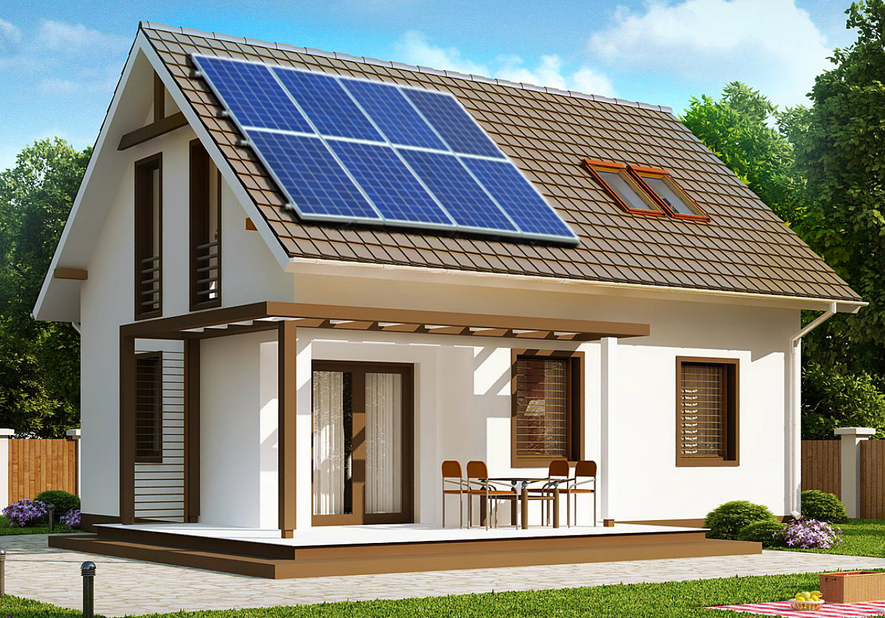

Приватні станції
Централізоване електропостачання нерідко супроводжується збоями. Це є причиною того, що багато власників приватних будинків мріють створити автономні системи подачі електричної енергії. При цьому ресурси переважно брати з альтернативних джерел. Хорошим прикладом є сонячна електростанція для будинку, яку спроєктують і встановлять фахівці нашої компанії. 
Технічні особливості
Якщо вам потрібна сонячна станція для будинку, тільки в нас знайдете необхідну конфігурацію. Ми зі свого боку допоможемо вам прийняти правильне й вигідне рішення для раціонального енергопостачання. Стандартна електростанція для будинку складається з таких компонентів:
- сонячні батареї з фотоелементом, виготовлені надійними компаніями, лідерами з виробництва товарів цієї групи (наприклад, бренд Risen);
- інвертор, де відбувається перетворення енергії світла на електрику (Huawei);
- акумулятори;
- з'єднувальний кабель;
- кріплення;
- захисна автоматика;
- розподільний щиток.
Кількість елементів системи, торгова марка, під якою вони випускаються, й інші параметри, залежать від базової комплектації, умов подальшої експлуатації, побажань замовника. Індивідуально підбирається й місткість акумуляторів.
Що потрібно знати про принципи роботи?
Наші приватні електростанції взаємодіють з централізованими джерелами електрики. Ми під’єднуємо їх до «зеленого» тарифу, що є перевагою: дозволяє знизити витрати на енергетику. Приватні сонячні електростанції діють за таким принципом. Електрика, що отримана за допомогою фотомодулів, використовується на потреби будинку.
Якщо потужність генерування перевищує місткість акумулятора, утворюються надлишки, які надходять до загальної мережі. Якщо енергії виробляється в недостатній кількості, то вона береться з центрального джерела. Згідно із «зеленим» тарифом, оплата відбувається за надмірно генеровану електрику.
У чому переваги співпраці з нами
На ринку альтернативної енергетики працюємо понад 9 років. В активі компанії величезна база підключених об'єктів по всій Україні. Наша команда починала свою діяльність з нуля, але це не завадило домогтися успіху. Ми є піонерами альтернативної енергетики України й зараз входимо до топ-5 компаній країни, що зайняті в цій галузі.
Якщо вам потрібно купити сонячну станцію для будинку, звертайтеся, і ми виправдаємо сподівання! Не тільки підберемо для неї обладнання, а й надамо послуги, завдяки яким воно буде довго й безперебійно працювати.
- Перелік послуг:
- Енергоаудит, у ході якого обстежується територія майбутнього розташування.
Мета цієї роботи – оцінити перспективи установки приватної сонячної електростанції для будинку й доцільність використання обладнання. - Зняття необхідних замірів.
- Проєктування з урахуванням індивідуальних потреб замовника й особливостей місцевості.
- Розрахунок вартості.
- Підбір необхідного обладнання, яке ви можете купити безпосередньо в нас.
- Монтаж з урахуванням усіх технологічних норм.
- Енергоаудит, у ході якого обстежується територія майбутнього розташування.
Якщо у штаті вашого підприємства є техніки, чия кваліфікація дозволяє виконати установку сонячних батарей, готові запропонувати послуги компетентного фахівця, що надасть їм експертну підтримку. Це називається шеф-монтаж, і, замовивши його, ви мінімізуєте помилки. На завершальному етапі проводимо запуск обладнання в експлуатацію. Надалі здійснюємо гарантійне та післягарантійне обслуговування.